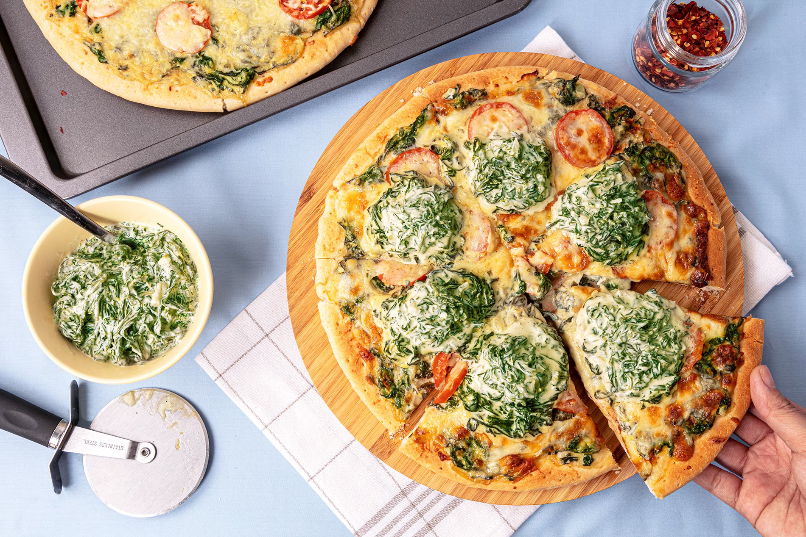

Spinach Pizza

Description
This Spinach Pizza recipe will satisfy your pizza cravings plus a does of healthy spinach! It's crazy-tasty, kids won't even notice that there's no meat. A healthy pizza recipe that doesn't compromise flavor.
The easy pie comes together quickly with store-bought dough, a quick creamy ricotta sauce, baby spinach and plenty of melty mozzarella. You can serve this with a salad, or maybe there's enough spinach on the pizza to count as your greens. The choice is yours.
Ingredients
- 4 bunches spinach, pick the leaves, rinse and drain well
- 2 tablespoons butter
- 3 cloves garlic, minced
- 1 piece onion, chopped
- 1/2 cup water
- 1 packet NESTLE All Purpose Cream
- 2 teaspoons MAGGI Magic sarap
- 1/4 teaspoon freshly ground pepper
- 1/4 teaspoon ground nutmeg (optional)
- 2 tablespoons grated cheese
- 2 tablespoons Mayonnaise
- 2 pieces large store-bought pizza dough
- 2 pieces tomatoes, sliced
- 1 1/2 cups 1 1/2 cup grated mozzarella
- 4 tablespoons Grated Parmesan Cheese
Steps
- Boil water in a pot, season with salt and blanch spinach leaves for 10 seconds. Strain and immediately drop in ice-cold water. Drain and squeeze excess water from spinach leaves. Coarsely chop and set aside. (10mins)
- Sauté garlic and onion in butter. Pour water and NESTLÉ® All Purpose Cream. Season with MAGGI® Magic Sarap®, pepper and nutmeg. Stir in blanched spinach and cook for 1 minute. Turn off heat and stir in grated cheese and mayonnaise. Set aside. (10mins)
- Spread half of creamed spinach on pizza dough, top with tomato, mozzarella and parmesan cheese. Bake in a preheated oven for 10 minutes or until golden brown. (15mins)
- Top with the rest of the creamed spinach. Cut into eight serving pieces and serve. (5mins)